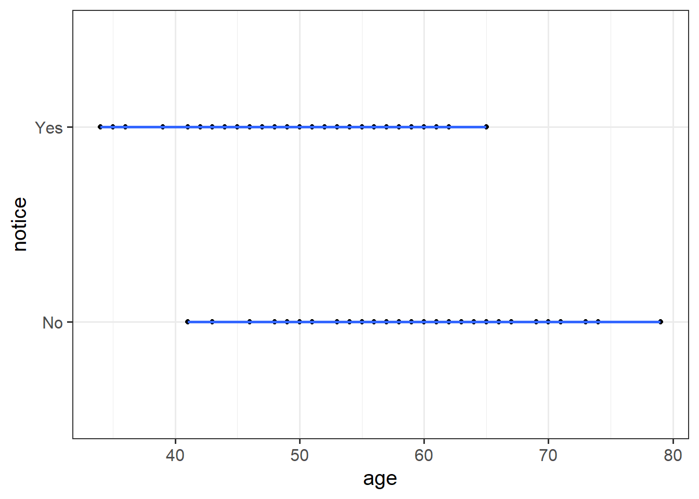

| id | bac | age | condition | notice |
|---|---|---|---|---|
| ID1 | 0.067437348 | 43 | Low | 0 |
| ID2 | 0.003312794 | 64 | Low | 0 |
| ID3 | 0.003233583 | 44 | Low | 1 |
| ID4 | 0.079840000 | 67 | High | 0 |
| ID5 | 0.066760207 | 62 | High | 0 |
| ID6 | 0.015507668 | 45 | Low | 1 |
Binary Logistic Regression
Learning Objectives
At the end of this lab, you will:
- Understand when to use a logistic model
- Understand how to fit and interpret a logistic model
What You Need
- Be up to date with lectures
- Have completed Labs 1-4
Required R Packages
Remember to load all packages within a code chunk at the start of your RMarkdown file using library(). If you do not have a package and need to install, do so within the console using install.packages(" "). For further guidance on installing/updating packages, see Section C here.
For this lab, you will need to load the following package(s):
- tidyverse
- patchwork
- kableExtra
- pander
- sjPlot
Lab Data
You can download the data required for this lab here or read it in via this link https://uoepsy.github.io/data/drunkdoor.csv.
Study Overview
Research Question
Is susceptibility to change blindness influenced by age, level of alcohol intoxication, and perceptual load?
Watch the following video:
Simons, D. J., & Levin, D. T. (1997). Change blindness. Trends in cognitive sciences, 1(7), 261-267.
You may well have already heard of these series of experiments, or have seen similar things on Netflix.
Setup
Setup
- Create a new RMarkdown file
- Load the required package(s)
- Read the caffeinedrink dataset into R, assigning it to an object named
drunkdoor
Question 1
Examine the dataset, and perform any necessary and appropriate data management steps.
Question 2
Provide a table of descriptive statistics and visualise your data.
Remember to interpret your plot in the context of the study.
Hint
- For your table of descriptive statistics, both the
group_by()andsummarise()functions will come in handy here. - Recall that when visualising a continuous outcome across several groups,
geom_boxplot()may be most appropriate to use. - Make sure to comment on any observed differences among the sample means of the four treatment conditions.
Question 3
Just visually following the line from the plot produced below, what do you think the predicted model value would be for someone who is aged 30? What does this value mean?
`geom_smooth()` using formula 'y ~ x'
Question 4
Consider the scales that the variables are currently on, with a particular focus on BAC and age.
- Do you want BAC on the current scale, or could you transform it somehow?
- Do you want age to be centred at 0 years (as it currently is), or could you re-centre to make it more meaningful?
Question 5
Fit your model using glm(), and assign it as an object with the name “changeblind_mdl”.
Question 6
Interpret your coefficients in the context of the study. When doing so, it may be useful to translate the log-odds back into odds.
Hint
The opposite of the natural logarithm is the exponential (see here for more details if you are interested), and in R these functions are log() and exp().
Recall that we can obtain our parameter estimates using various functions such as summary(),coef(), coefficients(), etc. Thus, we want to exponentiate the coefficients from our model in order to translate them back from log-odds.
Question 7
Plot the predicted data, using the original data points.
Question 8
Provide key model results in a formatted table.
Hint
Use tab_model() from the sjPlot package.
Remember that you can rename your DV and IV labels by specifying dv.labels and pred.labels.
Question 9
Interpret your results in the context of the research question and report your model in full.
Make reference to the interaction plot and regression table.
Question 10
Create a confusion matrix (i.e., a table of predicted outcome vs observed outcome, as displayed in ?@fig-confmat), and state what percentage of the 120 observations were correctly classified by our model, when the threshold is set at 0.5?

Hint
- Add new column to the drunkdoor dataset which contains the predicted probability of the outcome for each observation.
- Using
ifelse(), add another column which is these predicted probabilities translated into the predicted binary outcome (0 or 1) based on whether the probability is greater than > .5. - Create a two-way contingency table of the predicted outcome and the observed outcome.
Note: You don’t need the newdata = argument for predict() if you want to use the original data the model was fitted on.